ТБИЛИСИ, КАХЕТИЯ, ВОЕННО-ГРУЗИНСКАЯ ДОРОГА, СВАНЕТИЯ
День 1-2: Тбилиси
День 3-4: Кахетия и Алазанская долина
День 5-6: Военно-Грузинская дорога
День 7: дорога из Тбилиси в Кутаиси (Уплисцихе, музей Сталина, столп Кацхи)
День 8: Кутаиси
День 9-10: достопримечательности Имеретии
День 11-13: Сванетия
День 14: Возвращение в Тбилиси
ДЕНЬ 1-2: ТБИЛИСИ
Тбилиси — столица Грузии и самый красивый и самобытный город на Кавказе (да простят меня Баку с Ереваном, но это так). На вдумчивый осмотр Тбилиси нужно выделить всю неделю целиком, но у нас по условиям задачи есть лишь пара дней, а вокруг Тбилиси тоже есть уйма интересностей.
6 ВЕЩЕЙ, КОТОРЫЕ ОБЯЗАТЕЛЬНО НАДО СДЕЛАТЬ В ТБИЛИСИ:
Прогуляться по старому тбилисскому району Мтацминда, найти в нем нижнюю станцию фуникулера и взобраться на вершину доминирующей над городом Святой горы. Рассмотреть вблизи тбилисскую телебашню, чей силуэт виден в центре города буквально отовсюду, погулять по парку «Мтацминда» и прокатиться на колесе обозрения. По пути вниз сойти на остановке фуникулера «Пантеон» и осмотреть древнюю церковь Святого отца Давида и Пантеон, где похоронены самые уважаемые «сыны Грузии» (и не только — доказательством тому служит могила Грибоедова).
Оставить в отеле карту, навигатор и прочие модные гаджеты и броситься в Старый Тбилиси как в омут: бродить по изогнутым улочкам старого города, общаться с людьми, теряться, находиться и снова не знать где находишься. Просто идти куда глядят глаза и несут ноги – и наслаждаться древним городом.

Забраться по Вифлеемской лестнице к древним Вифлеемскими церквям, расположенным в уникальном районе Клдисубани («Скальный район»), где переулки изгибаются под немыслимыми углами, а дома «висят» подчас вопреки законам физики:
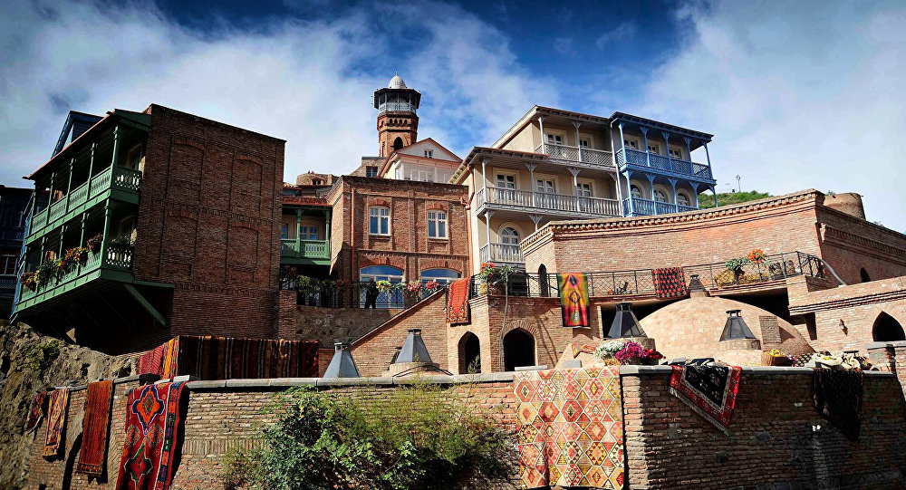На знаменитой канатке забраться на гору Нарикала, полюбоваться сверху на панораму Тбилиси – сравнить ее с видами с горы Мтацминда, решить для себя где круче.
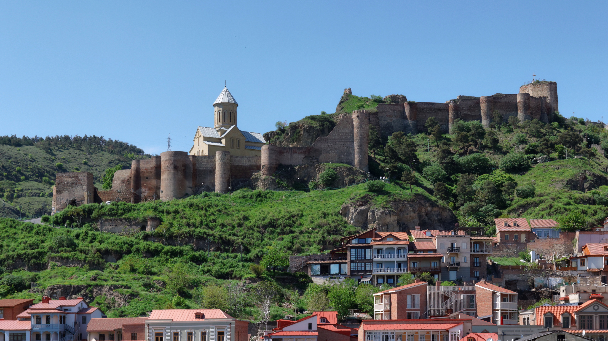Сходить в тбилисскую серную баню, заказать массаж у массажиста-мекисе. Опыт совершенно уникальный и незабываемый — эти бани весьма ценили многие, в том числе «наше все» Пушкин.
Поужинать настоящими грузинскими хинкали в хинкальной «Вельяминовская» или у «Захар Захарыча», запить все это отличным грузинским вином в одном из многочисленных погребов на улице Котэ Абхази.
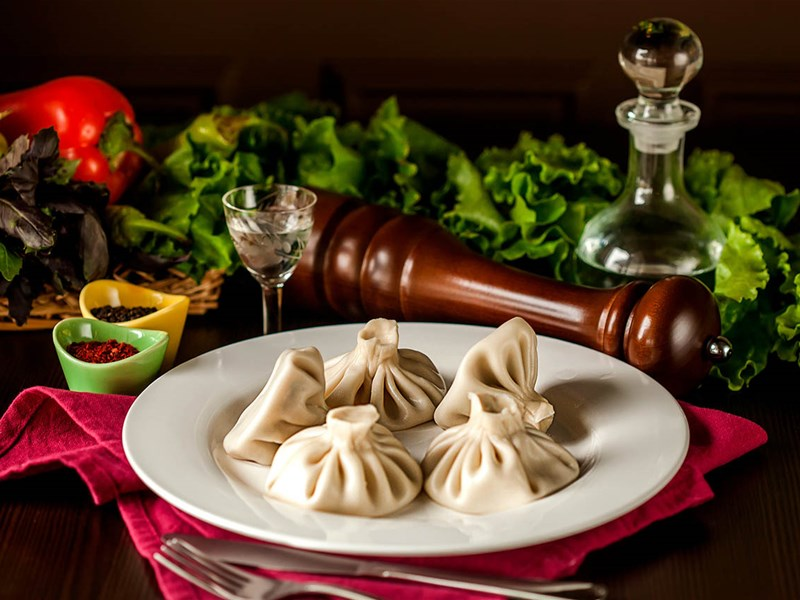ДЕНЬ 3-4: КАХЕТИЯ И АЛАЗАНСКАЯ ДОЛИНА
Кахетия — это край потрясающих пейзажей, вина, которое многие считают лучшим в Грузии и место, откуда «есть пошла Грузия»: именно кахетинский царь Ираклий II когда-то объединил страну. На посещение Кахетии нужно выделить минимум два дня (если есть всего 1 день, тогда разумнее всего ограничиться осмотром Сигнахи) и осмотреть следующие достопримечательности: «Город любви» Сигнахи — «грузинский Сан-Марино»; живописный городок, построенный на гребне горного хребта и по этой причине ни разу в своей истории не бывший завоеванным и разрушенным (в Грузии это редкость, тут долгое время «резвились» то турки, то персы, то они вместе). Во время президентства Саакашвили в реставрацию Сигнахи были вложены немалые средства, что сделало его главным туристическим брендом всей Восточной Грузии.
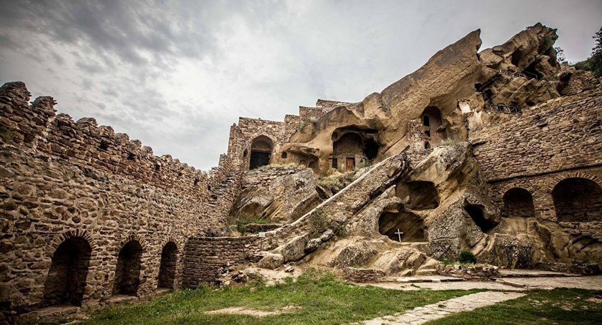Монастырь Давид Гареджи — одна из главных православных святынь Грузии, и место не столько туристическое, сколько паломническое. Монастырь был основан святым отцом Давидом Гареджийским и представляет собой комплекс естественных и рукотворных пещер по обоим склонам горного хребта.
Особую пикантность ситуации придает то, что по вершине этого хребта проходит государственная граница Грузии и Азербайджана, так что можно на десять минут и несколько шагов «сходить в Азербайджан».
Телави — столица Кахетии и город, хотя бы по названию известный всем любителям фильма «Мимино». Сам по себе не особо интересен, но его можно использовать как очень удобную базу для поездок по окрестностям — например, к собору Алаверди, монастырям Некреси и Шуамта, а также за вином в знаменитый Цинандали.
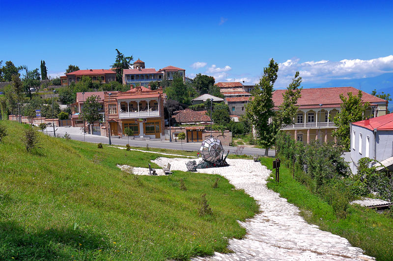 Алаверди — это действующий православный монастырь, чей собор до недавнего времени был самым высоким религиозным сооружением Грузии.
Монастырь Некреси — это один из самых первых православных монастырей Грузии, был основан
пришедшим из Сирии святым отцом Або Некресским во время персидской оккупации Кахетии,
позднее казненным персами во Мцхете. Монастырь расположен на горе и выглядит очень
живописно, кроме того — в Некреси делают свое очень хорошее вино, что добавляет резонов посетить это место.
Замок Греми — это одна из самых популярных достопримечательностей Кахетии, расположен
в 20 км от Телави. Своим расположением замок Греми похож на крепость Ананури: Греми
также возвышается практически над дорогой, так что мимо не проедешь. Когда-то Греми
был столицей всей Кахетии и через него проходили оживленные торговые пути в Персию и
Турцию. Сейчас замок известен своим храмовым комплексом на вершине холма, с которого
открываются изумительные виды «житницы Грузии» — Алазанской долины.
Живописное озеро Кварели расположено недалеко от одноименного города, известного прежде всего производимым здесь вином «Киндзмараули». Озеро Лопота расположено на закрытой территории гостиничного комплекса Lopota Lake Resort & SPA и считается курортом для обеспеченных жителей Грузии. Чтобы оценить атмосферу этого места без спешки, лучше всего поселиться в этом отеле хотя бы на денек — забронировать номер в нем можно по ссылке выше. На въезде на территорию отеля стоит будка с охранниками и шлагбаум — если им сказать, что вы просто хотите посмотреть озеро и сделать несколько фоток, скорее всего, пропустят без вопросов.
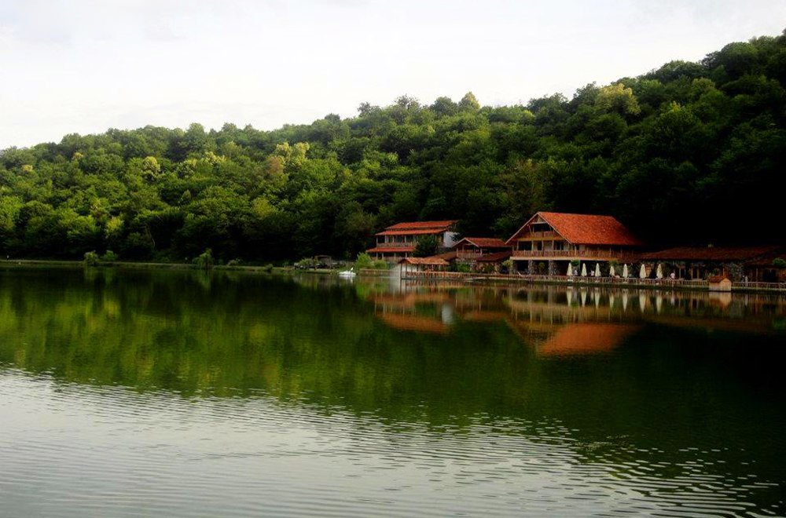ДЕНЬ 5-6: ВОЕННО-ГРУЗИНСКАЯ ДОРОГА
На протяжении практически всех своих 208 км дорога является одной большой достопримечательностью, но особо можно выделить следующие пункты:
Мцхета
Крепость Ананури и Жинвальское водохранилище
Троицкая церковь в Гергети
Горнолыжный курорт Гудаури
Крестовый перевал и памятник Дружбы народов
Степанцминда (Казбеги)
Рассмотрим некоторые из них подробнее.
Мцхета — древняя столица Грузии. Она была ею, пока царь Вахтанг Горгасали не перенес
свой престол в основанный им же Тбилиси. В древности Мцхета стала центром распространения
христианства — именно во Мцхете жила и проповедовала Святая Нино (по происхождению гречанка),
весьма почитаемая в Грузии. По легенде, она жила на территории монастыря Самтавро под кустом ежевики.
В наши дни и Самтавро, и потрясающий собор Светицховели входят в список Всемирного наследия ЮНЕСКО,
равно как и древний храм Джвари («крест»), возвышающийся на горе над городом и воспетый еще Лермонтовым.
От храма Джвари открываются изумительные виды на город Мцхету, и место слияния двух рек — Арагви и Куры.
Крепость Ананури — одна из самых известных и хорошо сохранившихся древних крепостей Грузии. Ананури был построен местными правителями — арагвскими эриставами — для контроля над единственным узким ущельем, по которому тогда можно было попасть с севера, из Дарьяльского ущелья, на юг в Тбилиси.
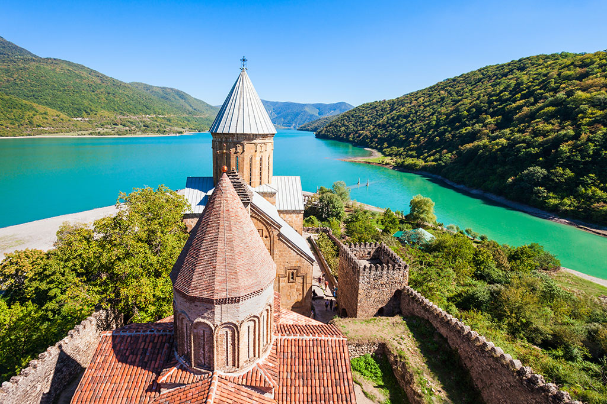Горнолыжный курорт Гудаури — один из четырех горнолыжных курортов Грузии, расположенный в поселке Гудаури прямо на Военно-грузинской дороге. Гудаури зимой — это катание на лыжах и сноуборде, летом — чистый горный воздух и потрясающие пейзажи.
Троицкая церковь Гергети — одна из самых почитаемых православных церквей Грузии. В былые времена, когда стране угрожало нашествие иноверцев (турок, персов, арабов) сюда, в горную и труднодоступную церковь, свозили священные иконы. Церковь Гергети — это место с просто потрясающей энергетикой, а кроме того, от ее стен открываются изумительные виды на гору Казбек и городок Степанцминда (Казбеги). До церкви от Военно-грузинской дороги можно добраться как пешком по горной тропе, так и на такси-внедорожнике за 40 лари. На своей или арендованной машине (даже на внедорожнике) туда ехать ни в коем случае нельзя — дорога отвратительная.
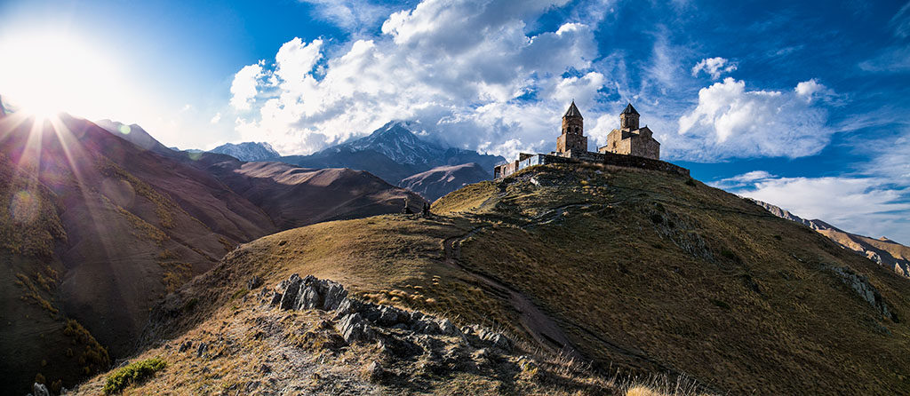ДЕНЬ 7: ДОРОГА В КУТАИСИ
По пути смотрим музей Сталина, пещерный город Уплисцихе и Столп Кацхи (Кацхийский столп) — о нем ниже по тексту.
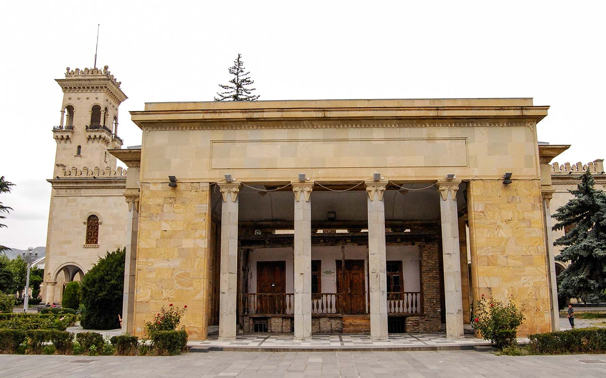ДЕНЬ 8: КУТАИСИ
Неофициальная вторая столица Грузии — в которой вполне официально с 2012 года располагается парламент страны.
Что посмотреть в Кутаиси: Храм Баграта, рынок, канатная дорога, еврейский квартал, исторический музей, парк Брдзенишвили, парламент Грузии, площадь Давида Строителя.
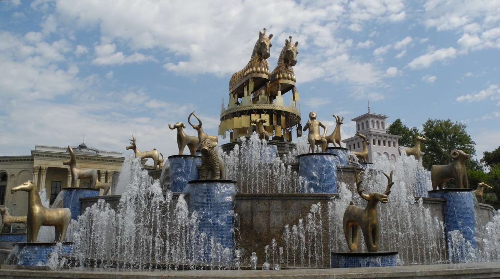ДЕНЬ 9-10: ДОСТОПРИМЕЧАТЕЛЬНОСТИ ИМЕРЕТИИ И РАЧИ
Что надо обязательно посмотреть в Имеретии:
Монастыри Гелати и Моцамета. Гелати был основан царем Давидом Агмашенебели (Строителем), и в нем же великий царь затем был похоронен. Название «Моцамета» означает «мученики», он посвящен святым князьям-мученикам Давиду и Константину Мхеидзе, убитым по приказу арабского завоевателя Мурвана Глухого за отказ принять ислам.
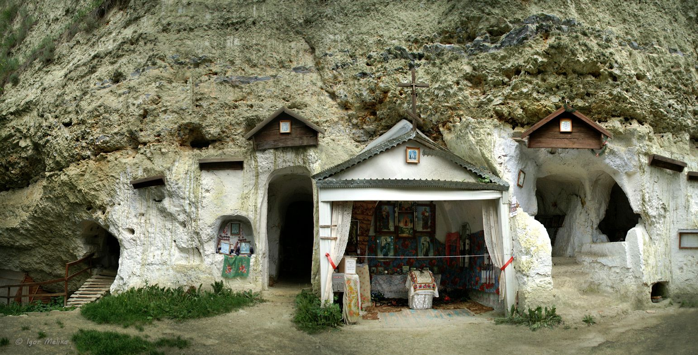Пещера Прометея — это потрясающе живописное и фотогеничное место, в настоящее время туристам доступна лишь небольшая ее часть (1400 метров), но и этого более чем достаточно.
Заповедник Сатаплия — известен найденными в нем следами динозавров и «Хрустальным мостом» над пропастью.
Столп Кацхи (Кацхийский столп) — очень живописный узкий известняковый монолит, на вершине которого расположен домик монаха-отшельника, очень похож на греческую Метеору.
Каньон Окаце — живописный 3-километровый каньон с подвесным консольным мостом вдоль склона.
В 8 км к северу от Окаце имеется водопад Кинчха — самый высокий в Грузии (120 метров).
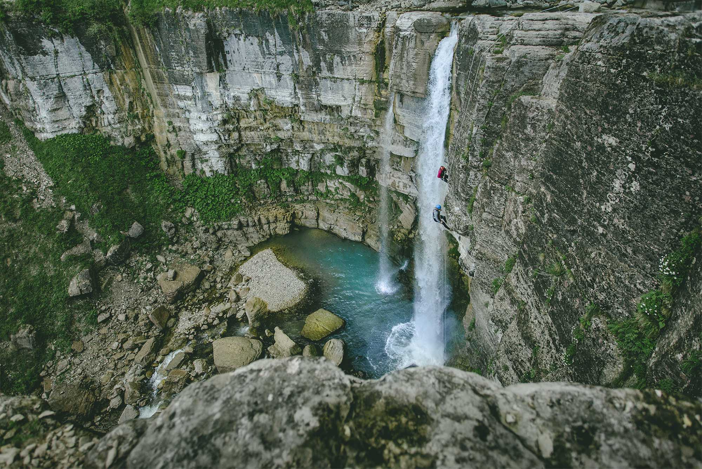Цхалтубо. Некогда санаторно-курортный центр всесоюзного значения, а ныне застывший во времени городок. Рекомендую совместить его осмотр с посещением пещеры Прометея и парка Сатаплия.
Мегрельский городок Мартвили известен в основном своим очень живописным каньоном и монастырем Чкондиди — главной христианской обителью Мегрелии. От каньона к Мартвильскому монастырю можно добраться с помощью канатной дороги.
ДЕНЬ 11-13: СВАНЕТИЯ
С каждым годом Сванетия становится все более популярна у туристов — благодаря потрясающей природе, самобытной культуре, истории и одному из материальных воплощений этой истории — легендарным сванским башням:
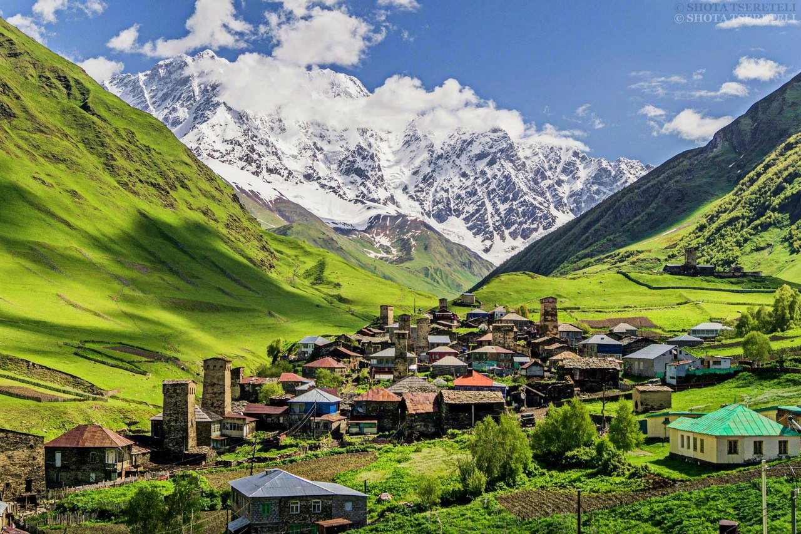Долгое время высокогорная Верхняя Сванетия была практически отрезана от остального мира: зимой единственную дорогу на полгода заваливало снегом, что наглухо блокировало сванов в их горных долинах. Это привело к возникновению специфической «изолированной» культуры и обычаев, многие из которых сохранились в Сванетии до сих пор.
В Сванетии есть все, ради чего люди едут в такие места: потрясающие горные пейзажи, чистейший воздух, живописные селения, ощетинившиеся сванскими башнями, горные озера, ледники, изумительный горный мед. Ехать в Сванетию нужно минимум на 2-3 дня, иначе большую часть времени отнимет дорога. Кроме того, может не повезти с погодой и, проведя в Сванетии лишь несколько часов, вы ничего там не увидите из-за туч и облаков. Как добраться до Сванетии: на маршрутке из Зугдиди (20 лари, 5 часов), из Кутаиси (25 лари, 6 часов)и из Тбилиси (30 лари, 8 часов).
Что нужно посмотреть в Сванетии:
Местия — столица Верхней Сванетии (Земо-Сванети), небольшой городок, расположенный в горах на высоте 1500 метров у слияния двух горных рек. Местия крайне фотогенична: городок раскинулся среди альпийских лугов в окружении мощных кавказских хребтов. Ехать «одним днем» из Зугдиди в Местиа нет никакого смысла, рекомендую хотя бы одну ночь провести в столице Верхней Сванетии. Остановиться в Местии можно в симпатичном гестхаусе Kaldani с видом на горы и сванские башни (рейтинг на Букинге 9.0, цена 16$ в сутки), а также в уютном отеле Edelweiss в самом центре Местии (рейтинг 9.7, цена 29$ в сутки).
Ушгули. Сюда надо отправиться, чтобы «прочувствовать» Сванетию в полной мере. В этом удаленном горном селении (46 км от Местии) сохранилось гораздо больше подлинной Сванетии, чем в подвергшейся нещадной реставрации Местии. Ушгули является вторым после тушетинской Бочорны поселением в Европе по высоте расположения (2200 м) и знаменито большим количеством отлично сохранившихся сванских башен. Из Ушгули можно отправиться в поход к леднику Шхара и к Лаптарскому перевалу. На своей машине до Ушгули можно проехать лишь на внедорожнике (нормальная дорога из Зугдиди заканчивается в Местии). Также есть маршрутки — но редко и нерегулярно — и возможность аренды машины с водителем. Поездка на такой машине из Местии в Ушгули обойдется примерно в 200 лари (80$), в Латали — в 40-50 лари.
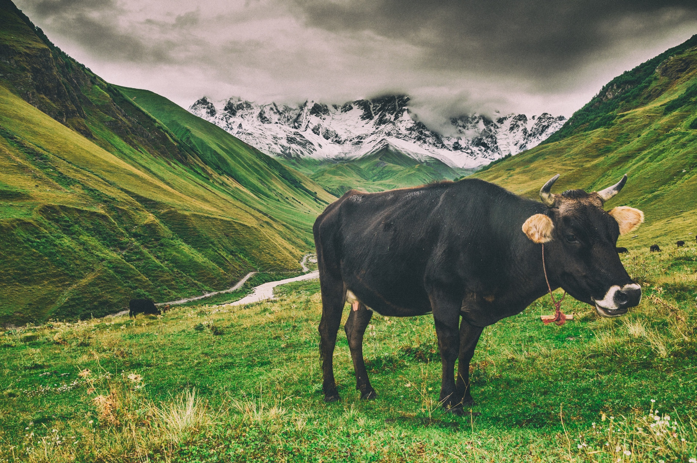Хацвали — это новый (открыт в 2011 году) горнолыжный курорт Грузии. Из-за своей «новизны», непростой транспортной доступности и слабой инфраструктуры людей здесь пока катается довольно мало. Хацвали расположен в 8 км к югу от Местии и доехать до него можно на такси по горному серпантину. Будучи зимним курортом, Хацвали и летом очень интересен: на канатке можно подняться на вершину горного хребта, насладиться шикарными видами на четыре главные вершины Кавказа, подышать чистым разреженным воздухом — главное, чтобы повезло с погодой.
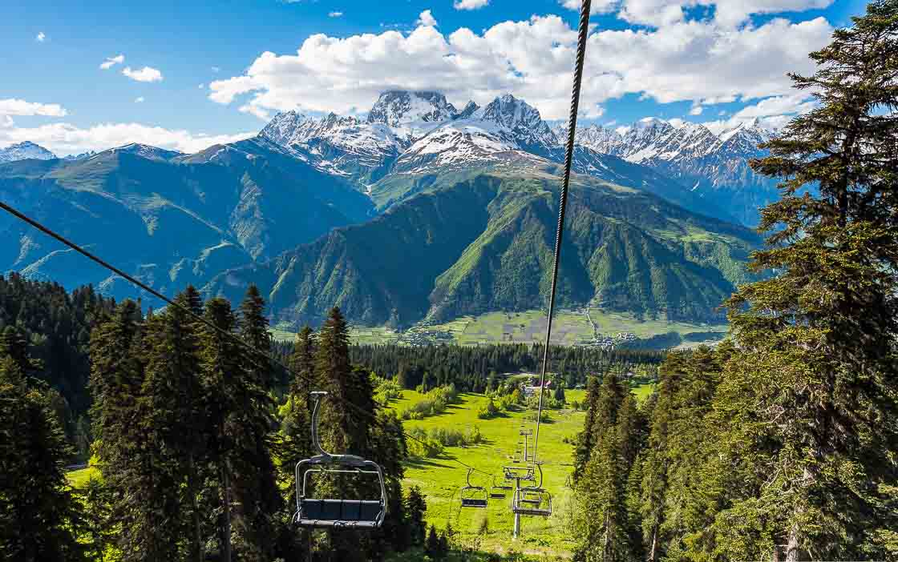